Abiko, Chiba: things to do, food and stays
Abiko · Chiba
Abiko
Highlighted on the Chiba map.
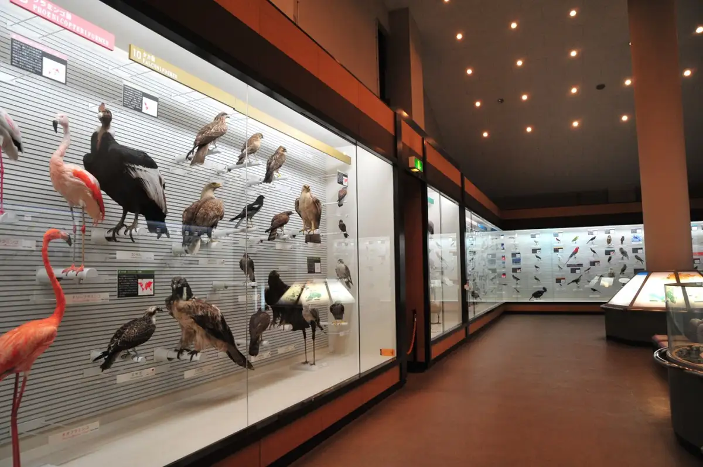
Stay
ホテルマークワンアビコ
Hotel Makuwan'Abiko
Hotel at Ekichikajinko Onsen in Shibasakidai, Abiko with breakfast available and a large communal bath.
Dining
小暮や
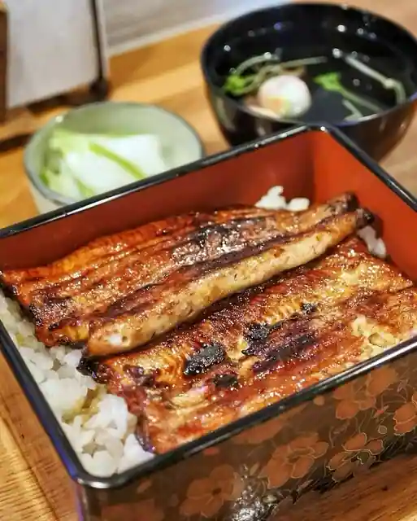
Kogure Ya
うなぎ お㚙川 我孫子店
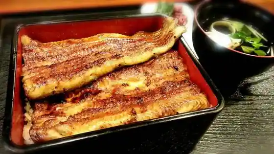
Unagi O Abiko
煮干しだし醤油ラーメン 桂
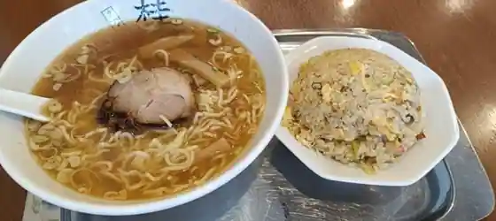
Niboshi Shidashi Shoyu Ramen Katsura
豆でっぽう
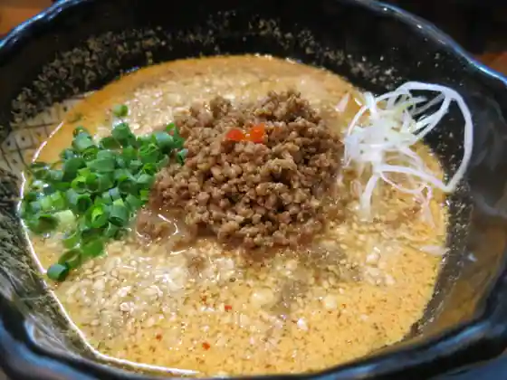
Mame Deppo
煮干中華そば のじじR 我孫子店
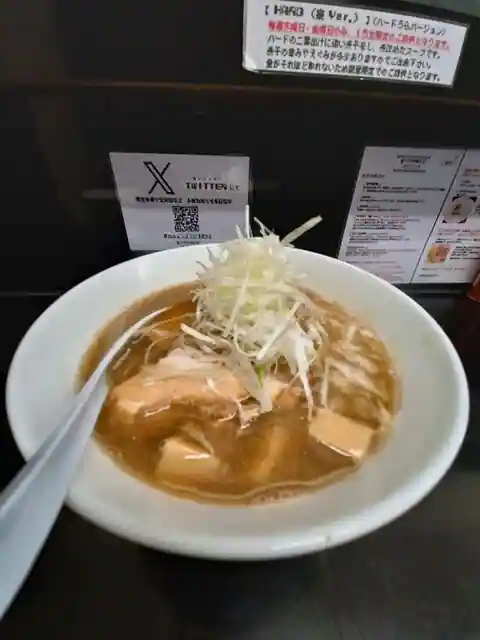
Niboshi Chuka Soba Nojiji R Abiko
横浜らーめん寿三家
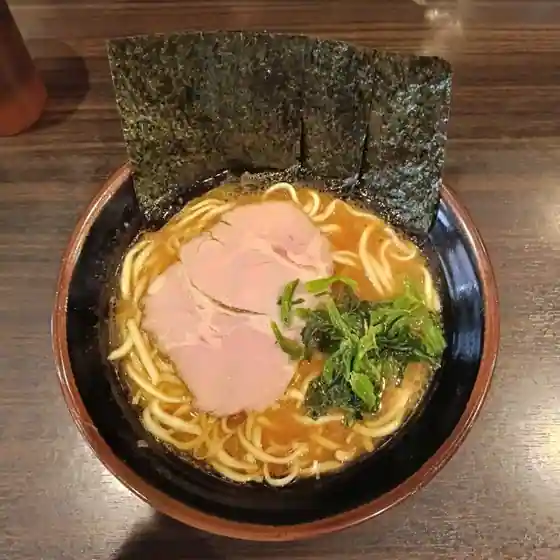
Yokohama Ramen Hisashi Sanke
idouji 我孫子店
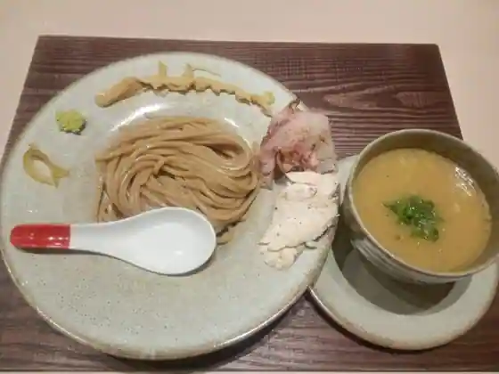
idouji Abiko
鰻 お賀川 本店
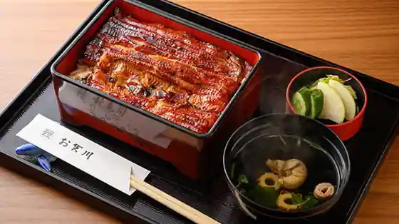
Unagi O Kagawa Hon
松風庵
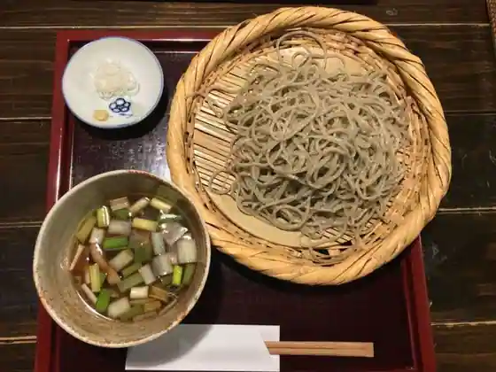
Matsukaze Iori
うな藤
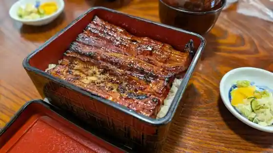
Una Fuji
弥生軒 6号店
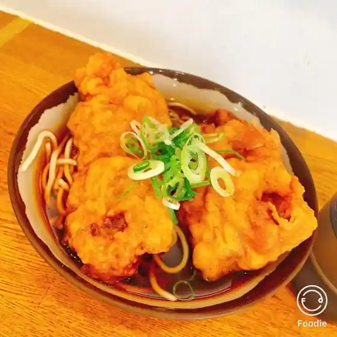
Yayoi Ken 6 Go
浜屋 我孫子店
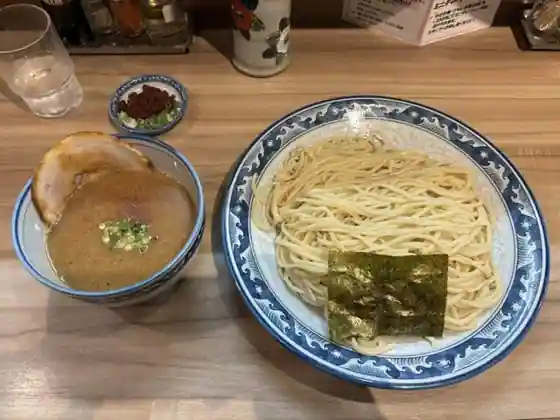
Hamaya Abiko
コ・ビアン
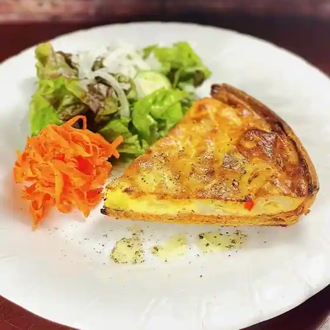
Ko Bian
弥生軒 5号店
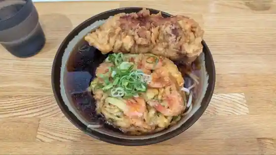
Yayoi Ken 5 Go
吉岡茶房
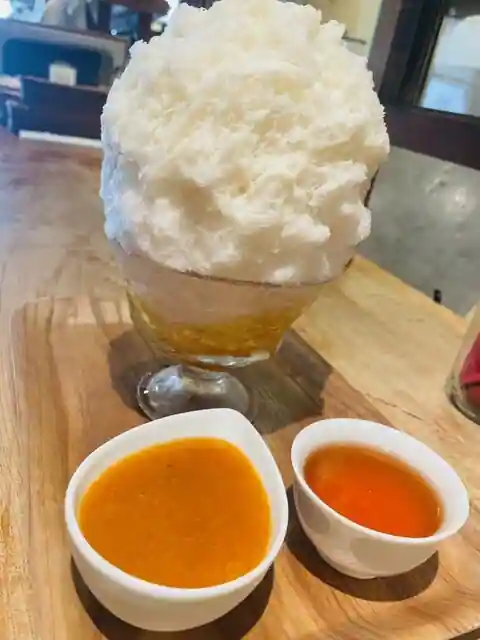
Yoshioka Sabo
手打ち蕎麦 湖庵
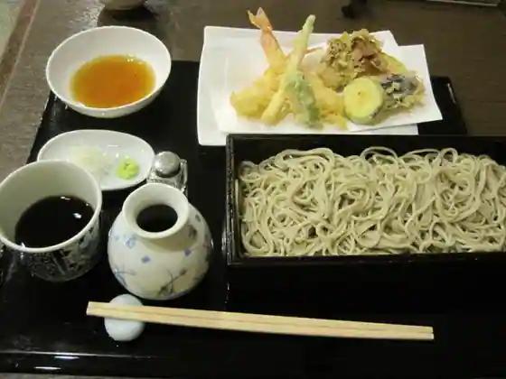
Teuchi Chi Soba Mizumi Iori
アビニヨン
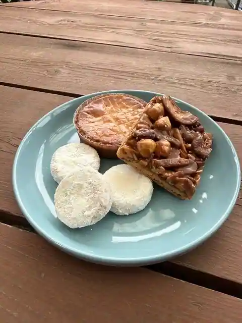
Abiniyon
弥生軒 8号店
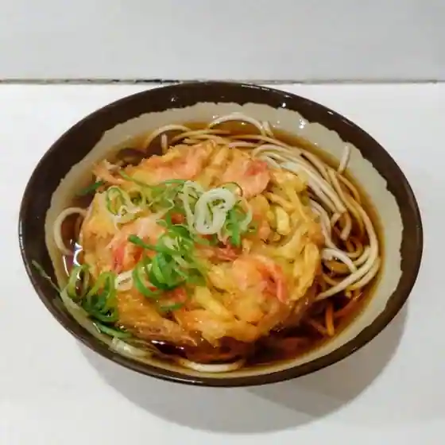
Yayoi Ken 8 Go
とんかつ さとう
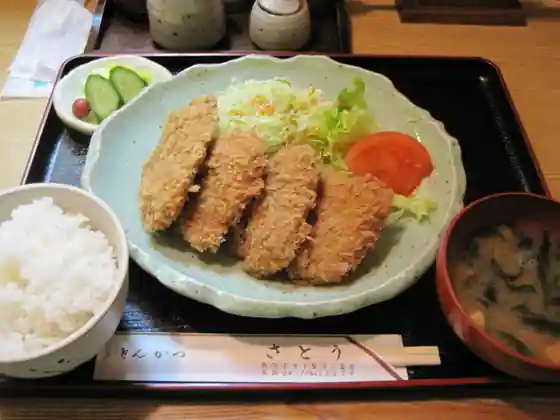
Tonkatsu Sato
らーめん 元気
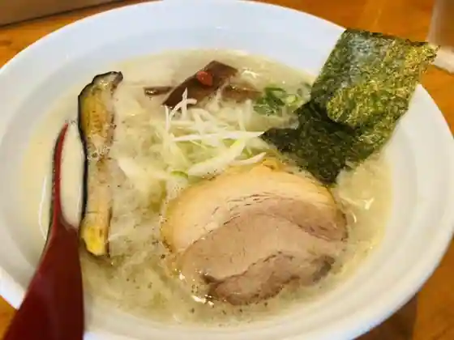
Ramen Genki
コ・ビアン Ⅱ
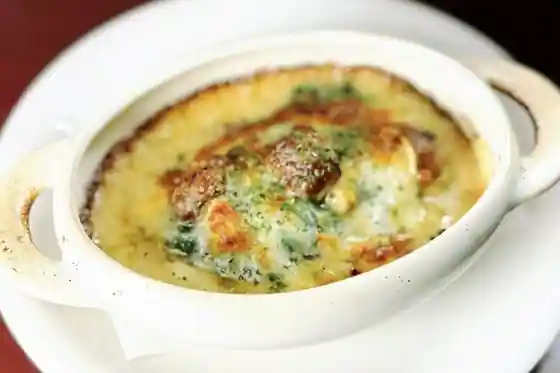
Ko Bian
ヴァンダンジュ
Vandanju
コッコパン
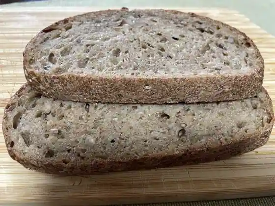
Kokko Bakery
レモングラス
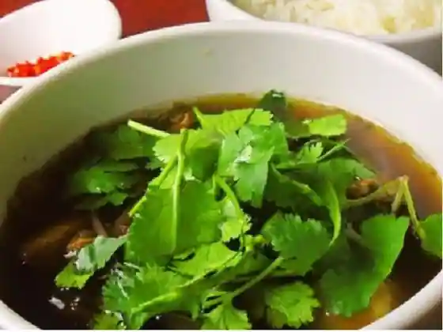
Remongurasu
Sights
Abiko Tori no Museum
Teganuma Park
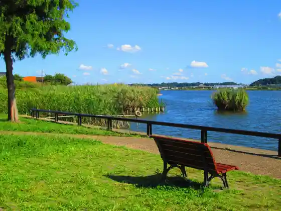
Teganuma Shinsui Plaza Mizu no Kan
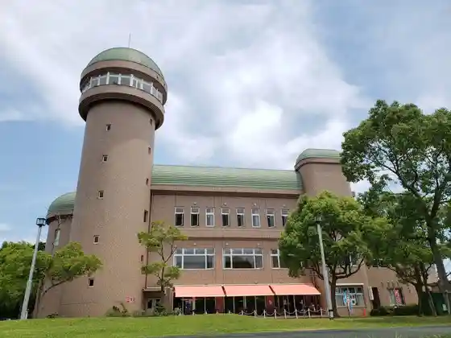
Fuki Fugo Shrine
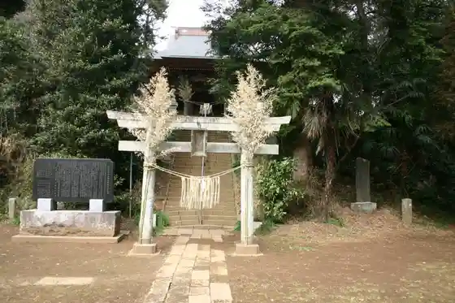
Abiko Shirakaba Literature Museum
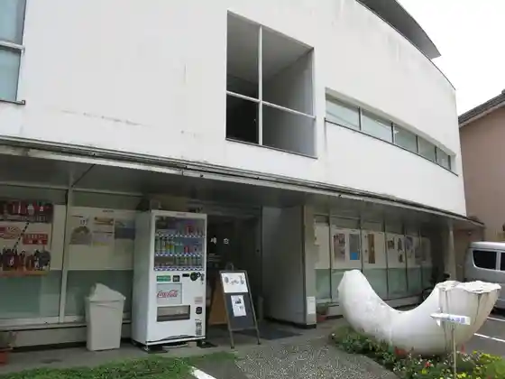
Abiko Sugi Village Sojinkan Memorial Museum
Nosambutsu Chokubai Tokoro Abikon
Abiko Infomeshon Center (Abishirube)
Kyu Village Kawa Besso
Nichi Shu Kannon